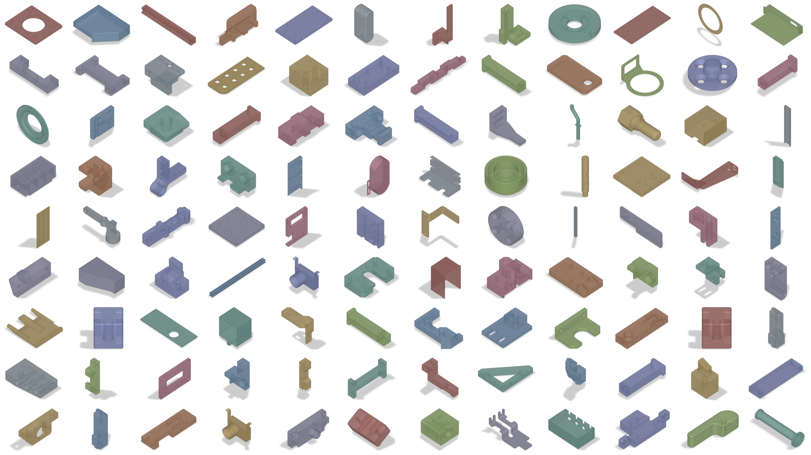
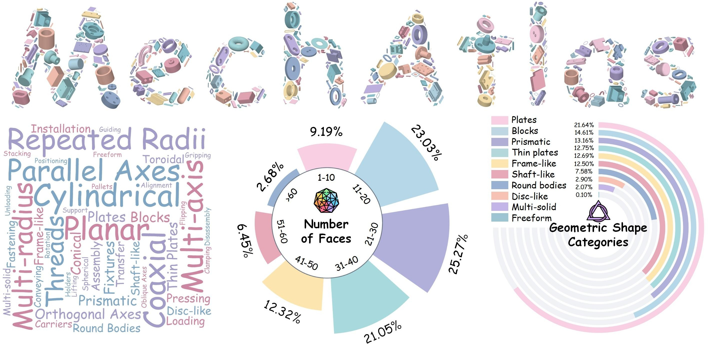
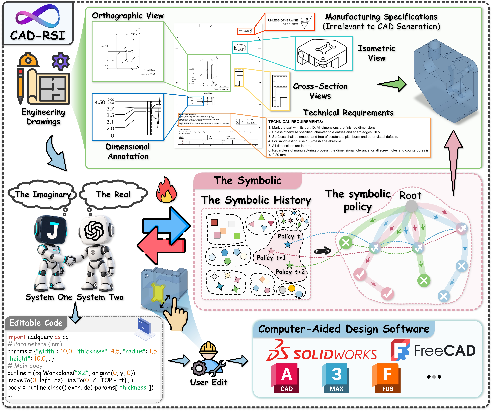
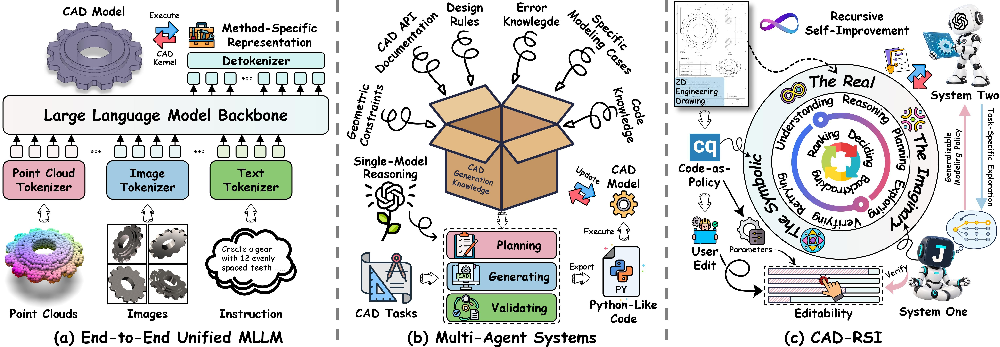
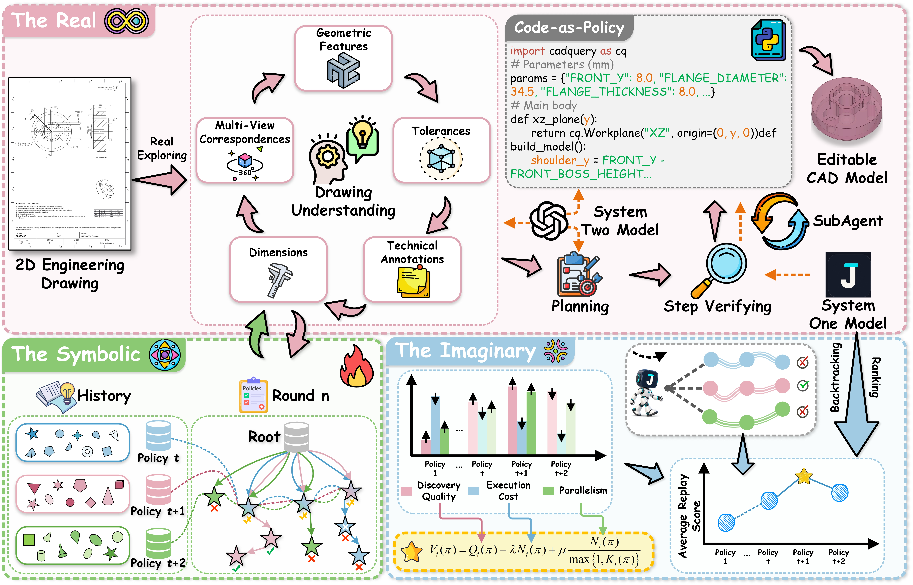
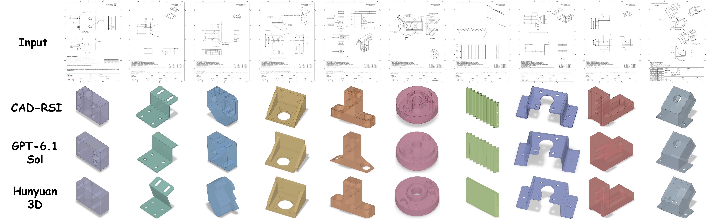

Recursive self-improvement for CAD reconstruction
CAD-RSI: Recursive Self-Improving CAD Reconstruction from Engineering Drawings
1 Beihang University
2 The Chinese University of Hong Kong
3 Westlake University
4 National University of Singapore
* Corresponding author
- MechAtlas drawings
- 49,662
- Invalidity ratio
- 0.00%
- VAGF
- 0.8321
- Inference time
- −58.5%
01 · Reconstruction replay
From Drawing to Editable CAD
Each engineering drawing is rebuilt as an editable CadQuery program. The 3D model and the active line of code advance together, step by step — drag the model to rotate it.
02 · Abstract
Abstract
Multimodal models and multi-agent systems have advanced CAD reconstruction from point clouds, images, and text descriptions. Yet reconstructing editable CAD models from standardized engineering drawings remains challenging. (1) Task-specific experience has limited generalizability. (2) Policy evaluation incurs redundant execution of historical tasks. (3) Using one model for all subtasks introduces redundant reasoning. We introduce CAD-RSI, a framework that recursively evolves generalizable symbolic modeling policies for editable CAD reconstruction from standardized engineering drawings. The Real collects execution trajectories, while historical backtracking in The Imaginary evaluates policies using recorded outcomes without repeating CAD execution. The Symbolic refines these policies to guide subsequent exploration. Dual-system coordination combines rapid decisions with deliberate reasoning to reduce redundant computation. Public CAD benchmarks provide limited coverage of professionally reviewed engineering drawings used in industrial production. We therefore release MechAtlas, comprising 49,662 such drawings manually drafted by professional CAD engineers and paired with corresponding STEP models. Experimental results show that CAD-RSI surpasses existing CAD reconstruction methods and achieves a VAGF of 0.8321, nearly matching frontier-level performance, while reducing average per-task token consumption and inference time by 38.9% and 58.5%.
03 · Benchmark
MechAtlas


04 · Overview
CAD-RSI Overview

05 · Positioning
CAD Generation Paradigms

06 · Method
CAD-RSI Architecture

07 · Results
MechAtlas Evaluation
| Method | IR (%) ↓ | IoU (%) ↑ | SIoU (%) ↑ | Med. CD ↓ | Mean CD ↓ | VAGF ↑ |
|---|---|---|---|---|---|---|
| Commercial LLMs | ||||||
| GPT-5.5 | 42.00 | 75.48 | 76.67 | 0.1199 | 1.517 | 0.3250 |
| GPT-5.6 Sol | 12.67 ↓29.33 | 77.27 ↑1.79 | 80.18 ↑3.51 | 0.0378 ↓0.0821 | 1.508 ↓0.009 | 0.5467 ↑0.2217 |
| GPT-6 Astra | 0.33 ↓41.67 | 93.24 ↑17.76 | 94.99 ↑18.32 | 0.0118 ↓0.1081 | 0.512 ↓1.005 | 0.8553 ↑0.5303 |
| GPT-6.1 Sol | 1.00 ↓41.00 | 91.55 ↑16.07 | 93.92 ↑17.25 | 0.0135 ↓0.1064 | 0.526 ↓0.991 | 0.8233 ↑0.4983 |
| Claude Opus 4.8 | 44.67 ↑2.67 | 67.94 ↓7.54 | 70.51 ↓6.16 | 0.4904 ↑0.3705 | 6.441 ↑4.924 | 0.1755 ↓0.1495 |
| Claude Fable 5.1 | 0.67 ↓41.33 | 93.44 ↑17.96 | 95.18 ↑18.51 | 0.0085 ↓0.1114 | 0.873 ↓0.644 | 0.8710 ↑0.5460 |
| Claude Sonnet 5.5 | 8.67 ↓33.33 | 80.93 ↑5.45 | 84.28 ↑7.61 | 0.0841 ↓0.0358 | 2.699 ↑1.182 | 0.5133 ↑0.1883 |
| Claude Opus 5.5 | 1.67 ↓40.33 | 92.49 ↑17.01 | 94.64 ↑17.97 | 0.0140 ↓0.1059 | 0.521 ↓0.996 | 0.8190 ↑0.4940 |
| Gemini 3.1 Pro Preview | 37.33 ↓4.67 | 69.79 ↓5.69 | 73.77 ↓2.90 | 0.3781 ↑0.2582 | 6.211 ↑4.694 | 0.2161 ↓0.1089 |
| Gemini 3.8 Flash | 3.67 ↓38.33 | 84.48 ↑9.00 | 86.86 ↑10.19 | 0.0493 ↓0.0706 | 2.146 ↑0.629 | 0.6249 ↑0.2999 |
| Grok 4.7 | 9.33 ↓32.67 | 72.26 ↓3.22 | 75.38 ↓1.29 | 0.2200 ↑0.1001 | 4.849 ↑3.332 | 0.3799 ↑0.0549 |
| Doubao Seed 2.1 Pro | 27.67 ↓14.33 | 48.22 ↓27.26 | 54.41 ↓22.26 | 1.4027 ↑1.2828 | 9.203 ↑7.686 | 0.1572 ↓0.1678 |
| Qwen3.7-Plus | 35.67 ↓6.33 | 42.38 ↓33.10 | 47.16 ↓29.51 | 1.9052 ↑1.7853 | 10.115 ↑8.598 | 0.1153 ↓0.2097 |
| Open-Source LLMs | ||||||
| Qwen3-VL-32B-Instruct | 55.67 | 31.59 | 35.83 | 4.6771 | 13.913 | 0.0492 |
| Qwen3.8-27B | 26.33 ↓29.34 | 47.86 ↑16.27 | 50.78 ↑14.95 | 1.1195 ↓3.5576 | 10.057 ↓3.856 | 0.1657 ↑0.1165 |
| GLM-4.6V | 52.33 ↓3.34 | 40.65 ↑9.06 | 44.42 ↑8.59 | 1.9125 ↓2.7646 | 14.980 ↑1.067 | 0.0896 ↑0.0404 |
| Kimi-K3 | 12.33 ↓43.34 | 58.05 ↑26.46 | 61.19 ↑25.36 | 0.4465 ↓4.2306 | 8.039 ↓5.874 | 0.2915 ↑0.2423 |
| DeepSeek-V4.1-Flash | 15.33 ↓40.34 | 54.78 ↑23.19 | 57.95 ↑22.12 | 0.7474 ↓3.9297 | 8.074 ↓5.839 | 0.2325 ↑0.1833 |
| CAD Reconstruction Models | ||||||
| Cad-Coder | 74.67 | 15.34 | 12.27 | 4.9280 | 29.120 | 0.0277 |
| Drawing2CAD | 70.33 ↓4.34 | 18.68 ↑3.34 | 15.21 ↑2.94 | 3.7173 ↓1.2107 | 25.452 ↓3.668 | 0.0365 ↑0.0088 |
| Agentic Frameworks | ||||||
| IterCAD∗ | 5.67 | 70.22 | 74.39 | 0.2519 | 6.478 | 0.3943 |
| IterCAD† | 3.00 ↓2.67 | 77.09 ↑6.87 | 79.91 ↑5.52 | 0.1502 ↓0.1017 | 3.897 ↓2.581 | 0.4675 ↑0.0732 |
| Ortho2CAD-ITS∗ | 3.00 ↓2.67 | 72.38 ↑2.16 | 76.26 ↑1.87 | 0.3107 ↑0.0588 | 4.987 ↓1.491 | 0.3608 ↓0.0335 |
| Ortho2CAD-ITS† | 1.33 ↓4.34 | 79.14 ↑8.92 | 83.15 ↑8.76 | 0.1503 ↓0.1016 | 2.649 ↓3.829 | 0.4707 ↑0.0764 |
| CAD-RSI∗ | 0.00 ↓5.67 | 88.94 ↑18.72 | 91.27 ↑16.88 | 0.0185 ↓0.2334 | 0.587 ↓5.891 | 0.8199 ↑0.4256 |
| CAD-RSI† | 0.00 ↓5.67 | 91.49 ↑21.27 | 94.09 ↑19.70 | 0.0131 ↓0.2388 | 0.456 ↓6.022 | 0.8321 ↑0.4378 |

08 · Citation
BibTeX